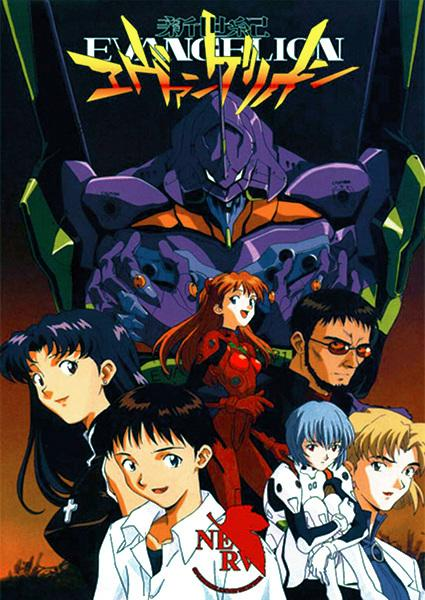
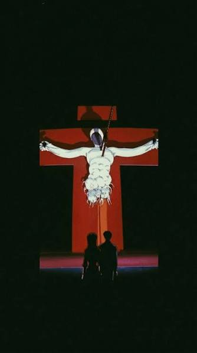

The storie of Evangelion

Neon Genesis Evangelion (Japanese: 新世紀エヴァンゲリオン, Hepburn: Shin Seiki Evangerion; 'New Century Evangelion' in Japanese and 'New Beginning Gospel' in Greek), also known as simply Evangelion or Eva, is a Japanese anime television series produced by Gainax and Tatsunoko Production, and directed by Hideaki Anno. It was broadcast on TV Tokyo and its affiliates from October 1995 to March 1996. The story, set in 2015, fifteen years after a worldwide cataclysm in the futuristic fortified city of Tokyo-3, follows Shinji Ikari, a teenage boy who is recruited by his father Gendo Ikari to the mysterious organization Nerv. Shinji is tasked to pilot an Evangelion, a giant biomechanical mecha, to fight and destroy beings known as Angels. The series has been described as a deconstruction of the mecha genre; it delves into the experiences, emotions, and mental health of the Evangelion pilots and Nerv members as they are called upon to understand the ultimate cause of events and the motives behind human action. The series features archetypal imagery derived from Shinto cosmology and mystical Judeo-Christian religions and traditions, including Midrashic tales and Kabbalah. [4] The psychoanalytic accounts of human behavior put forward by Sigmund Freud and Carl Jung are also prominently featured.[5][6] Neon Genesis Evangelion received acclaim from critics and audiences and is regarded as one of the greatest animated series of all time; however, its final two episodes drew controversy, as many viewers found the ending confusing and abstract. Gainax attributed the episodes' abstract style both to the severe time constraints imposed by the production schedule and to Anno's deliberate artistic choice. In 1997, Gainax released a remake of the last two episodes in the feature film The End of Evangelion, written and co-directed by Anno. A series of four films, Rebuild of Evangelion, retelling the events of the series with different plot elements and a new ending, were released between 2007 and 2021. Evangelion has had a profound influence on the anime industry and influenced numerous future works. Films, manga, home video releases, and other products in the franchise have achieved record sales in Japanese markets and strong sales in overseas markets, with related goods earning over ¥150 billion(848.1 miljoen euro) by 2007 and Evangelion pachinko machines generating ¥700 billion(2.24 miljard euro) by 2015.

In 2015, 15 years after a global cataclysm known as the Second Impact, teenager Shinji Ikari is summoned to the futuristic city of Tokyo-3 by his estranged father Gendo Ikari, who is the director of the special paramilitary organization Nerv. Shinji witnesses United Nations forces battling a giant creature named Sachiel, one of a race of monstrous beings known as Angels whose awakening was foretold in the Dead Sea Scrolls. Because of the Angels' near-impenetrable force fields known as Absolute Terror Fields, or simply AT Fields, Nerv's Evangelion bio-mechanical mechas, which are synchronized to their pilots' nervous systems and possess their own force fields, are the only weapons capable of combating and destroying the Angels. Nerv officer Misato Katsuragi escorts Shinji into the Nerv complex beneath Tokyo-3, where Gendo pressures him into piloting Evangelion Unit-01 to fight the Angel. Without training, Shinji is unable to destroy it, and Unit-01 suffers cranial damage. Because of the nervous system synchronization, Shinji is overwhelmed by the pain and loses consciousness, causing the Evangelion to go berserk and savagely kill the Angel on its own. Following hospitalization, Shinji moves in with Misato and settles into life in Tokyo-3. In his second battle, Shinji defeats the Angel Shamshel but runs away afterward, distraught. Misato confronts Shinji, and he decides to remain a pilot. Shinji and Nerv's crew must defeat the remaining fourteen Angels to prevent the Third Impact, a global cataclysm that would destroy the world. Evangelion Unit-00 is repaired shortly afterward, and Shinji tries to befriend its pilot Rei Ayanami, a mysterious and socially isolated teenage girl. With Rei's help, Shinji defeats the Angel Ramiel. They are joined by Evangelion Unit-02's pilot, the multitalented, fiery-tempered teenager Asuka Langley Soryu, who is German-Japanese-American. The three of them manage to defeat several Angels, and as Shinji adjusts to his new role as a pilot, he gradually becomes more confident and self-assured. Asuka moves in with Shinji, and they develop a complicated relationship with each other, which includes confused romantic attraction and a kiss at Asuka's provocation. After being absorbed by the Angel Leliel, Shinji breaks free thanks to Eva-01 acting on its own. He is later forced to fight Evangelion Unit-03, which has become infected by the Angel Bardiel, and its pilot, his friend and classmate Toji Suzuhara, becomes incapacitated and permanently disabled. Asuka loses her self-confidence following a defeat, which is worsened by her next fight against the Angel Arael, who psychologically attacks her mind. It forces her to relive her worst fears and childhood trauma, resulting in a severe mental breakdown. In the next battle, Rei sacrifices herself to self-destruct Unit-00 and save Shinji. Misato and Shinji visit the hospital, where they find Rei alive, but claiming she is "the third Rei". Misato forces the scientist Ritsuko Akagi to reveal the dark secrets of Nerv, the Evangelion boneyard, and the Dummy Plug system, which operates using clones of Rei, who was created using the DNA of Shinji's mother, Yui Ikari. Kaworu Nagisa replaces the catatonic Asuka as Unit-02's pilot and befriends Shinji, gaining his trust. He is revealed to be the final foretold Angel, Tabris, and fights Shinji, realizing that he must die to allow humanity to survive. He asks Shinji to kill him, who hesitates but eventually kills Kaworu. This succession of events causes Shinji to be overwhelmed with guilt, leaving him emotionally scarred and alienated from the rest of the characters. After the final Angel is defeated, Gendo triggers the "Human Instrumentality Project", a forced evolution of humanity in which the souls of humankind are merged for benevolent purposes. He believes that if unified, humanity could overcome the loneliness and alienation that have plagued them. Shinji's soul grapples with the reason for his existence and experiences an epiphany that he needs others to thrive and to accept himself by seeing a potential Shinji in another reality. This enables him to destroy the wall of negative emotions that torment him and unite with the others, who congratulate him.